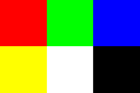
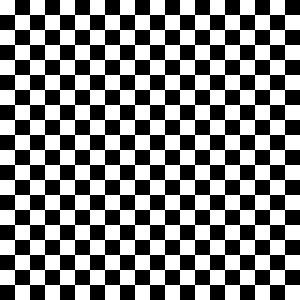
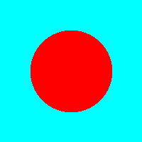
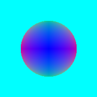
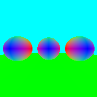
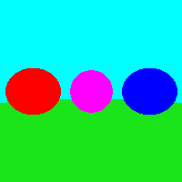
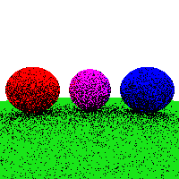
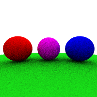

Writing a software ray tracer in OCaml
Building a ray tracer is a great introduction to graphics, and even a basic hobby ray tracer can provide a great insight into how larger, commercial ray tracer’s work. A basic ray tracer can be simple enough that they can be implemented in nearly every language, requiring only the ability to print out text to form full images with the use of the ppm image format.
A great introduction into building a hobby ray tracer is following the book series ray tracing in one weekend by Peter Shirley, Trevor D Black and Steve Hollasch. The book series uses only C++ and its standard library which makes it incredibly easy to start writing your first ray tracer. The first book is targeted towards the basics and is meant for everyone. While the second and third are targeted towards those who are more interested in learning more about ray tracers.
Following the rough outline of that book series I decided to further my knowledge in OCaml by implementing a ray tracer within it, and then explaining the code in this blog, and what is hopefully a series of blogs for each book. The ray tracer will also be extended with other features including obj parsing and external scene definitions. With that said, if you follow the steps outlined in this blog you will end up with a fully functional ray tracer
The beginning
The first step in implementing any ray tracer is being able to get an image of what is being rendered. The first step of this is to be able to represent the pixels themselves. We can accomplish this using two separate structures, a 3D vector and a pixel.
(* Vec3.ml *)
module Vec3 = struct
type vec3 = {
x: float;
y: float;
z: float;
}
let create x y z =
{ x = x; y = y; z = z }
let zero = create 0. 0. 0.
let one = create 1. 1. 1.
let add a b =
{ x = a.x +. b.x; y = a.y +. b.y; z = a.z +. b.z }
let sub a b =
{ x = a.x -. b.x; y = a.y -. b.y; z = a.z -. b.z }
let dot a b =
a.x *. b.x +. a.y *. b.y +. a.z *. b.z
let scalar a s =
{ x = a.x *. s; y = a.y *. s; z = a.z *. s }
let comp_mul a b =
{ x = a.x *. b.x; y = a.y *. b.y; z = a.z *. b.z }
let mag_squared v =
dot v v
let mag v =
sqrt (mag_squared v)
let norm v =
scalar v (1. /. (mag v))
let negate v =
scalar v ~-.1.
end(* Pixels.ml *)
open Vec3
module Pixels = struct
type pixel = {
x: int;
y: int;
z: int;
}
let pixel_of_vec3 (v : Vec3.vec3) =
let x = int_of_float (v.x *. 255.) in
let y = int_of_float (v.y *. 255.) in
let z = int_of_float (v.z *. 255.) in
{ x = x; y = y; z = z }
let string_of_pixel p =
Printf.sprintf "%3d %3d %3d" p.x p.y p.z
endThe vec3 is a simple wrapper around 3 floats, and includes some basic operations that will be used, with more operations being added later on. More operations will be added at a later point but they are not needed at the minute and so will be excluded for now.
The pixel type is used as an intermediary between the colours generated by the ray tracer, where each component has a value between 0-1, and the output required for the ppm image format where an 8 bit integer is required for each rgb colour component.
These modules provide the basis of an image, meaning all that is needed now is a wrapper around the data of the image and a way to output that data to the console, allowing us to pipe that output to a file
To try and clear up confusion that may occur, an image consists of pixels, which in this context can either be a vec3 or a pixel type. For this reason I will refer to the pixels in an image as the data of the image.
Breakdown of the ppm image format
The ppm image format used here consists of a header and then the data.
The header solely consists of a type (In our case that is P3), the max bit depth, and then the width and height of the image.
Then for the data each row is an individual pixel consisting of three integers with spaces in between representing the red, green and blue channels. An integer equal to the bit depth would represent full intensity while 0 represents no intensity.
Typically the maximum bit depth is 255, however some image viewers do allow for a limit of 65535. A simple example of a ppm image is
P3
3 2
255
255 0 0
0 255 0
0 0 255
255 255 0
255 255 255
0 0 0which, when scaled up, generates the following image 
Images
The image module is a wrapper for the data of the physical image, storing the width, height, and actual data of the image in some format. The module also includes some basic operations that can be applied including: - map: Applies a function to every pixel in the image, returning a new image - mapi: The same as map but also includes the coordinates of the pixel as an argument - iter: Applies a function to every pixel but does not return a new image
Some basic creation functions are also provided, along with conversions between pixel and vec3 images and a way to print the image to the console
(* Image.ml *)
open Vec3
open Pixel
module Image = struct
type 'a image = {
width: int;
height: int;
data: 'a array array
}
let map f i =
{
width = i.width;
height = i.height;
data = Array.map (fun r -> Array.map (fun x -> f x) r) i.data
}
let mapi f i =
{
width = i.width;
height = i.height;
data = Array.mapi (fun yp r -> Array.mapi (fun xp x -> f x xp yp) r) i.data
}
let iter f i =
Array.iter (fun r -> Array.iter (fun x -> f x) r) i.data
let create_vec3_image w h =
{ width = w; height = h; data = Array.make_matrix w h Vec3.zero }
let pixel_image_of_vec3_image i =
map (Pixels.pixel_of_vec3) i
let print_pixel_image i =
iter (fun x -> Printf.printf "%s\n" (Pixels.string_of_pixel x)) i
let ppm_of_pixel_image i =
Printf.printf "P3\n%d %d\n255\n" i.width i.height;
print_pixel_image i
endWith that implementation we can add some code to the main file, which allows us to generate a basic image. The way of generating this image is the cornerstone to how the entire ray traced image will be generated.
(* main.ml *)
open Vec3
open Image
let () =
let checkerboard _p x y =
if (x + y) mod 2 == 0 then
Vec3.one
else
Vec3.zero
in
let image = Image.generate_vec3_image 20 20 in
let image = Image.mapi checkerboard image in
Image.ppm_of_pixel_image (Image.pixel_image_of_vec3_image image)Which, if all has been done correctly, should output something along the lines of
P3
20 20
255
255 255 255
0 0 0
255 255 255
0 0 0
255 255 255
0 0 0
.
.
.
.If this output is piped to a file with a .ppm extension, and a suitable image viewer is used then the following image should become visible

Casting rays
Now that we have a way of representing images we can start implementing the ability to cast rays into the scene. For this we will need to implement the following modules:
- Ray: A simple wrapper around two Vec3’s, one representing the origin, and the other representing the direction
- Hit Record: A collection of data that returns relevant information about the hit position on a shape
- Viewport: Has a size independent of the image, allowing for the output image to be resized while the rendered output will remain the same
- Shape: Represents anything that a ray can intersect with
- Object: A collection of data that represents any object in the final scene, for know only includes a shape, but will eventually include materials
- Scene: A collection of objects, and required parameters for rendering the scene
We will start at the top of the list and work down.
Rays
The ray is probably the simplest module that is needed to be implemented
(* Ray.ml *)
open Vec3
module Ray = struct
type ray = {
origin: Vec3.vec3;
direction: Vec3.vec3;
}
let create o d = { origin = o; direction = d }
let calculate_position r t =
Vec3.add r.origin (Vec3.scalar r.direction t)
endHit record
A hit record requires a small bit more work but not much
(* HitRecord.ml *)
open Vec3
module HitRecord = struct
type hit_record = {
mutable t: float;
mutable pos: Vec3.vec3;
mutable normal: Vec3.vec3;
mutable is_front_face: bool;
}
type hit = Miss
| Hit of hit_record
let create_null =
fun () -> {
t = 0.;
pos = Vec3.zero;
normal = Vec3.zero;
is_front_face = true;
}
endMutable here is used to denote that we may change the parameters after creating a hit_record object. This is used for easier assigning to the record values when creating a hit_record
Viewport
(* Viewport.ml *)
open Vec3
open Image
module Viewport = struct
type viewport_T = {
width: float;
height: float;
depth: float
}
let create_null =
fun () -> {
width = 0.;
height = 0.;
depth = 0.
}
let create width height depth =
{
width = width;
height = height;
depth = depth
}
let get_components v (i : 'a Image.image) =
let half_width = v.width /. 2. in
let half_height = v.height /. 2. in
let origin = Vec3.zero in
let front = Vec3.create 0. 0. 1. in
let right = Vec3.create 1. 0. 0. in
let up = Vec3.create 0. ~-.1. 0. in
let center = Vec3.add (Vec3.scalar front v.depth) origin in
let left = Vec3.add (Vec3.scalar (Vec3.negate right) half_width) center in
let top_left = Vec3.add (Vec3.scalar up half_height) left in
let delta_right = Vec3.scalar right (v.width /. (float_of_int i.width)) in
let delta_down = Vec3.scalar (Vec3.negate up) (v.height /. (float_of_int i.height)) in
(top_left, delta_right, delta_down)
endShape
The shape module has a lot more work required compared to the previous two, requiring some maths to calculate the intersection of a sphere and a ray which can be seen below.
Ray sphere Derivation
We can define the ray as where is our ray and , our the origin and direction respectively.
We can then define a point on the sphere at the origin as where is some point and is the radius of the sphere
For a sphere not originating at the origin but instead at a point is defined as
Replacing with the equation for the ray we get
Expanding out the left hand side we get Which can be simplified to Re-ordering around results in
If we then relabel some of the components we get Where
Therefore we can then use the quadratic formula to solve for getting us
We can simplify this further be defining which results in
Code
(* Shape.ml *)
open Vec3
open HitRecord
open Ray
module Shape = struct
type sphere_data = {
centre: Vec3.vec3;
radius: float;
}
exception ShapeError of string
type shape_T = None
| Sphere of sphere_data
let create_sphere c r =
Sphere { centre = c; radius = r }
let get_normal s p =
match s with
| Sphere s ->
Vec3.norm (Vec3.sub p s.centre)
| _ -> raise (ShapeError "Normal is not defined for this shape")
let get_normal_and_front_face s p d =
let normal = get_normal s p in
let dot = Vec3.dot normal d in
if dot < 0. then
(normal, true)
else
(Vec3.negate normal, false)
let sphere_ray_collision (r : Ray.ray) s =
let o_c = Vec3.sub r.origin s.centre in
let a = Vec3.dot r.direction r.direction in
let half_b = Vec3.dot r.direction o_c in
let c = (Vec3.dot o_c o_c) -. (s.radius *. s.radius) in
let disc = ((half_b *. half_b) -. (a *. c)) in
if disc < 0. then
HitRecord.Miss
else
let disc = sqrt disc in
let t =
if (~-.half_b -. disc) > 0.001 then
(~-.half_b -. disc) /. a
else if (~-.half_b +. disc) > 0.001 then
(~-.half_b +. disc) /. a
else
~-.1.
in
if t <= 0. then
HitRecord.Miss
else
let pos = Ray.calculate_position r t in
let (normal, front_face) = get_normal_and_front_face (Sphere s) pos r.direction in
let hit_record = HitRecord.create_null () in
hit_record.t <- t;
hit_record.pos <- pos;
hit_record.normal <- normal;
hit_record.is_front_face <- front_face;
HitRecord.Hit (hit_record)
let check_collision r shape =
match shape with
| Sphere s -> sphere_ray_collision r s
| _ -> raise (ShapeError "No collision defined for shape")
endObject
Now we can define an object, for now this is solely a wrapper around a shape, but will eventually be used to add materials
(* Object.ml *)
open Shape
module Object = struct
type object_T = {
shape: Shape.shape_T;
}
let create s = {
shape = s
}
let check_collision o r =
Shape.check_collision r o.shape
endScene
Finally we can implement the scene. This will be where most of the actual ray tracer actually occurs and so ends up being relatively complex. For now though, it remains pretty simple
(* Scene.ml *)
open Object
open Ray
open Vec3
open Viewport
open Image
module Scene = struct
type scene_definition = {
mutable objects: Object.object_T array;
mutable image_width: int;
mutable image_height: int;
mutable viewport: Viewport.viewport_T;
}
let create_null =
fun () -> {
objects = [||];
image_width = 0;
image_height = 0;
viewport = Viewport.create_null ();
}
let add_object def o =
def.objects <- (Array.append def.objects [| o |]);
def
let calculate_colour _scene _ray =
Vec3.zero
let per_pixel x y scene origin top_left right_delta down_delta =
let right = Vec3.scalar right_delta (float_of_int x) in
let down = Vec3.scalar down_delta (float_of_int y) in
let ray_origin = origin in
let target = Vec3.add top_left (Vec3.add right down) in
let ray = Ray.create ray_origin (Vec3.sub target ray_origin) in
let colour = calculate_colour scene ray in
colour
let render_scene scene =
let origin = Vec3.zero in
let image = Image.create_vec3_image scene.image_width scene.image_height in
let (top_left, right, down) = Viewport.get_components scene.viewport image in
let output_image = Image.mapi
(fun _c x y -> per_pixel x y scene origin top_left right down) image in
Image.ppm_of_pixel_image (Image.pixel_image_of_vec3_image output_image)
endThe code at the minute should produce a solid black screen
Main
We can now rewrite the main class to utilise this new scene class
(* main.ml *)
open Scene
open Shape
open Object
open Viewport
open Vec3
let () =
let sphere = Shape.create_sphere (Vec3.create 0. 0. 1.) 0.5 in
let obj1 = Object.create sphere in
let viewport = Viewport.create 2. 2. 1. in
let scene_def = Scene.create_null () in
let scene_def = Scene.add_object scene_def obj1 in
scene_def.image_width <- 200;
scene_def.image_height <- 200;
scene_def.viewport <- viewport;
Scene.render_scene scene_defwhich generates the following image 
Proper ray calculations
If we replace the temporary code we placed in calculate_colour we can start calculating the proper ray intersections
(* Scene.ml *)
let calculate_colour scene ray =
let collisions = Array.mapi (fun i o -> (i, Object.check_collision o ray)) scene.objects in
let (_index, closest) = Array.fold_left
(fun (index, hit) (i, x) ->
match hit, x with
| HitRecord.Miss, _ -> (i, x)
| HitRecord.Hit _h, HitRecord.Miss -> (index, hit)
| HitRecord.Hit h1, HitRecord.Hit h2 ->
if h1.t < h2.t then
(index, hit)
else
(i, x)
) (-1, HitRecord.Miss) collisions in
match closest with
| HitRecord.Miss ->
miss_colour ray
| HitRecord.Hit _h ->
Vec3.create 1. 0. 0.This also requires us to implement a miss_colour function and to also open HitRecord at the top of the file
(* Scene.ml *)
let miss_colour _r =
Vec3.create 0. 1. 1.Which finally generates our first ray traced image 
Rendering normals
Before implementing any materials we can first see if the normals are being calculated properly by first implementing a scatter_ray method to our object
(* Object.ml *)
let scatter_ray _o (_r : Ray.ray) (h : HitRecord.hit_record) =
let c_r = Float.abs h.normal.x in
let c_g = Float.abs h.normal.y in
let c_b = Float.abs h.normal.z in
let colour = Vec3.create c_r c_g c_b in
Some (colour, Ray.create Vec3.zero Vec3.zero)And then once again modifying calculate_colour to
let calculate_colour scene ray =
let collisions = Array.mapi (fun i o -> (i, Object.check_collision o ray)) scene.objects in
let (index, closest) = Array.fold_left
(fun (index, hit) (i, x) ->
match hit, x with
| HitRecord.Miss, _ -> (i, x)
| HitRecord.Hit _h, HitRecord.Miss -> (index, hit)
| HitRecord.Hit h1, HitRecord.Hit h2 ->
if h1.t < h2.t then
(index, hit)
else
(i, x)
) (-1, HitRecord.Miss) collisions in
match closest with
| HitRecord.Miss ->
miss_colour ray
| HitRecord.Hit h ->
let obj = scene.objects.(index) in
let result = Object.scatter_ray obj ray h in
match result with
| Some (c, _r) ->
c
| None ->
Vec3.zerowill allow us to see the following image 
A better scene
Due to the implementation of our calculate_colour function we are able to easily add multiple objects to the scene, with the following code we add 3 separate spheres, which we will give different materials when we implement the material system
(* main.ml *)
open Scene
open Shape
open Object
open Viewport
open Vec3
let () =
let left_sphere = Shape.create_sphere (Vec3.create ~-.1.2 0. 2.) 0.5 in
let center_sphere = Shape.create_sphere (Vec3.create 0. 0. 2.2) 0.5 in
let right_sphere = Shape.create_sphere (Vec3.create 1.2 0. 2.) 0.5 in
let ground_sphere = Shape.create_sphere (Vec3.create 0. 100.5 2.) 100. in
let left_obj = Object.create left_sphere in
let center_obj = Object.create center_sphere in
let right_obj = Object.create right_sphere in
let ground_obj = Object.create ground_sphere in
let viewport = Viewport.create 2. 2. 1. in
let scene_def = Scene.create_null () in
let scene_def = Scene.add_object scene_def left_obj in
let scene_def = Scene.add_object scene_def center_obj in
let scene_def = Scene.add_object scene_def right_obj in
let scene_def = Scene.add_object scene_def ground_obj in
scene_def.image_width <- 200;
scene_def.image_height <- 200;
scene_def.viewport <- viewport;
Scene.render_scene scene_defWhich generates 
Materials
First we need to add some new functions to our vec3 module. This is mostly for generating random vectors. This is because the lambertian material we will be implementing first effectively models the microfacets (the microscopic peaks and valleys) in a surface. Meaning any ray that hits an object has a roughly equal chance to bounce in any other direction with a slight preference towards the normal.
In the vec3 module we add these definitions
(* Vec3.ml *)
let random_bounds min max =
let x = min +. (Random.float (max -. min)) in
let y = min +. (Random.float (max -. min)) in
let z = min +. (Random.float (max -. min)) in
create x y z
let random_in_unit_sphere =
fun () ->
let v = ref (random_bounds ~-.1. 1.) in
while not ((mag_squared !v) < 1.) do
let new_v = random_bounds ~-.1. 1. in
v := new_v;
done; !v
let random_unit =
fun () ->
norm (random_in_unit_sphere ())
let near_zero v =
let eps = 1e-8 in
(mag_squared v) < epsThen the basic implementation for any material is as follows
(* Material.ml *)
open Vec3
open Ray
open HitRecord
module Material = struct
type material_T = None
exception MaterialError of string
let create_null = fun () -> None
let scatter_ray mat _ray hit =
match mat with
| _ -> raise (MaterialError "No Material Scatter defined")
endFrom this we can easily implement a lambertian material along with a few others we will implement at a later point. This can be accomplished by modifying material_T to include a Lambertian type along with implementing a scatter method for the material
(* Material.ml *)
type material_lambertian = {
albedo: Vec3.vec3;
}
type material_T = None
| Lambertian of material_lambertian
let create_lambertian albedo =
Lambertian { albedo = albedo }
let scatter_lambertian (lambertian : material_lambertian) (hit : HitRecord.hit_record) =
let scatter_direction = Vec3.add hit.normal (Vec3.random_unit ()) in
let scatter_direction =
if Vec3.near_zero scatter_direction then
hit.normal
else
scatter_direction
in
let scattered_ray = Ray.create hit.pos scatter_direction in
Some (lambertian.albedo, scattered_ray)
let scatter_ray mat _ray hit =
match mat with
| Lambertian l -> scatter_lambertian l hit
| _ -> raise (MaterialError "No Material Scatter defined")Our scatter_lambertian function takes in the normal at the hit position and adds to that vector another randomly generated vector, generating the scattered direction for our ray with a skew towards the normal. In addition to this to colour of the object is returned from the function
As we have now implemented materials we will also now need to modify our object class to account for this. This is easily done by just modifying the object_T type and modifying the scatter_ray method
(* Object.ml *)
let create s m = {
shape = s; material = m
}
let scatter_ray o (r : Ray.ray) (h : HitRecord.hit_record) =
Material.scatter_ray o.material r hFinally we can modify our main file to account for the change in the object, allowing us to account for the lambertian material
Adding to the top of the file
(* main.ml *)
let material_left = Material.create_lambertian (Vec3.create 1. 0. 0.) in
let material_center = Material.create_lambertian (Vec3.create 1. 0. 1.) in
let material_right = Material.create_lambertian (Vec3.create 0. 0. 1.) in
let material_ground = Material.create_lambertian (Vec3.create 0.1 0.9 0.1) inand then modifying our object generation to be
(* main.ml *)
let left_obj = Object.create left_sphere material_left in
let center_obj = Object.create center_sphere material_center in
let right_obj = Object.create right_sphere material_right in
let ground_obj = Object.create ground_sphere material_ground inWhich should now generated the following image 
Shadows
Before we carry on implementing more materials, you may be questioning why the previous image looks so flat, and the colours may not be what you expected. This is due to no shadows being currently implemented. We have all the features implemented that we need to get shadows we just need to modify our scene code.
The most important thing when implementing shadows is to ensure there is a limit to the total depth of the ray as otherwise the ray may get stuck and never stop bouncing on different objects. To ensure this does not occur we will add a max depth to our scene definition
(* scene.ml *)
type scene_definition = {
mutable objects: Object.object_T array;
mutable image_width: int;
mutable image_height: int;
mutable viewport: Viewport.viewport_T;
mutable max_depth: int;
}We can now modify our calculate colour function to be recursive with a few additional checks for the depth.
(* scene.ml *)
let create_null =
fun () -> {
objects = [||];
image_width = 0;
image_height = 0;
viewport = Viewport.create_null ();
max_depth = 1;
}
let rec calculate_colour scene ray depth =
if depth <= 0 then
Vec3.zero
else
...
match result with
| Some (c, r) ->
Vec3.comp_mul c (calculate_colour scene r (depth - 1))
| None ->
Vec3.zero
let per_pixel x y scene origin top_left right_delta down_delta =
...
let colour = calculate_colour scene ray scene.max_depth in
colourAnd then once again modifying our main file to account for max_depth
(* main.ml *)
scene_def.max_depth <- 100;We can generate the following image

Which might look a bit weird but is physically correct. This is due to our miss colour being (0, 1, 1), meaning our red sphere on the left should appear completely black as there is no red in the light to be reflected. If instead we modify our miss colour to be a solid white then the following image is generated which looks more correct
(* scene.ml *)
let miss_colour _r =
Vec3.create 1. 1. 1.
Shadow-acne
We can see fro the previous two images that now we have implemented shadows there are a lot of black spots that are appearing around the image. This is due to rays reaching their max depth. We can reduce this by implementing multi-sampling, which increases the number of rays cast, making it less likely for all the rays to reach their max depth. Multi-sampling has the additional benefit of reducing the jagged edges caused around the edges of objects, providing a smoother look to the entire image. A basic implementation of multi-sampling involves generating more rays, all going in the same direction, but then offsetting that direction a tiny amount randomly and then averaging the output of all the rays to generate the output for that pixel. This causes the image to now take longer to generate, but overall provides a much better looking image.
To begin we will modify our scene definition to account for our sample count
(* scene.ml *)
type scene_definition = {
mutable objects: Object.object_T array;
mutable image_width: int;
mutable image_height: int;
mutable viewport: Viewport.viewport_T;
mutable max_depth: int;
mutable sample_count: int;
}
let create_null =
fun () -> {
objects = [||];
image_width = 0;
image_height = 0;
viewport = Viewport.create_null ();
max_depth = 1;
sample_count = 1;
}We can then modify our per_pixel function to allow for more rays to be generated. This can easily be accomplished by using OCaml’s Array module and its functional methods. We will move the generation of the ray into it’s own internal method and then generate an array of rays. From that we can generate the colour for each ray using map and then folding the output to generate the average of all the colours. To start we move the ray generation to an internal function and implement randomness.
(* scene.ml *)
let per_pixel x y scene origin top_left right_delta down_delta =
let right = Vec3.scalar right_delta (float_of_int x) in
let down = Vec3.scalar down_delta (float_of_int y) in
let ray_origin = origin in
let generate_ray _ =
let offset = Vec3.random_bounds (~-.0.5) 0.5 in
let off_x = Vec3.scalar right_delta offset.x in
let off_y = Vec3.scalar down_delta offset.y in
let target = Vec3.add top_left (Vec3.add right down) in
let target = Vec3.add target (Vec3.add off_x off_y) in
let ray = Ray.create ray_origin (Vec3.sub target ray_origin) in
ray
in
let ray = generate_ray () in
let colour = calculate_colour scene ray scene.max_depth in
colourAs generating the ray has been moved to its own function we can now use the Array.init function to generate an array of a specified size using this function
let rays = Array.init scene.sample_count generate_ray inNow we can apply the calculate_colour function to each ray
let colours = Array.map (fun r -> calculate_colour scene r scene.max_depth) rays inNow we can fold the output to generate the sum of all the colours
let colour = Array.fold_left Vec3.add Vec3.zero colours inFinally we can renormalise the output to get a number between 0 and 1
let colour = Vec3.scalar colour (1. /. (float_of_int scene.sample_count)) inBringing this all together we end up with the new per_pixel function
(* scene.ml *)
let per_pixel x y scene origin top_left right_delta down_delta =
let right = Vec3.scalar right_delta (float_of_int x) in
let down = Vec3.scalar down_delta (float_of_int y) in
let ray_origin = origin in
let generate_ray _ =
let offset = Vec3.random_bounds (~-.0.5) 0.5 in
let off_x = Vec3.scalar right_delta offset.x in
let off_y = Vec3.scalar down_delta offset.y in
let target = Vec3.add top_left (Vec3.add right down) in
let target = Vec3.add target (Vec3.add off_x off_y) in
let ray = Ray.create ray_origin (Vec3.sub target ray_origin) in
ray
in
let rays = Array.init scene.sample_count generate_ray in
let colours = Array.map (fun r -> calculate_colour scene r scene.max_depth) rays in
let colour = Array.fold_left (Vec3.add) Vec3.zero colours in
let colour = Vec3.scalar colour (1. /. (float_of_int scene.sample_count)) in
colourFinally modifying our main scene_definition to account for the sample count allows us to generate the following image
(* main.ml *)
scene_def.sample_count <- 40;Which generates the following image 
Which we can see has now reduced the amount of shadow-acne drastically and, if you look closely at the edges of the sphere, has rounded out the spheres so that they now look nicer